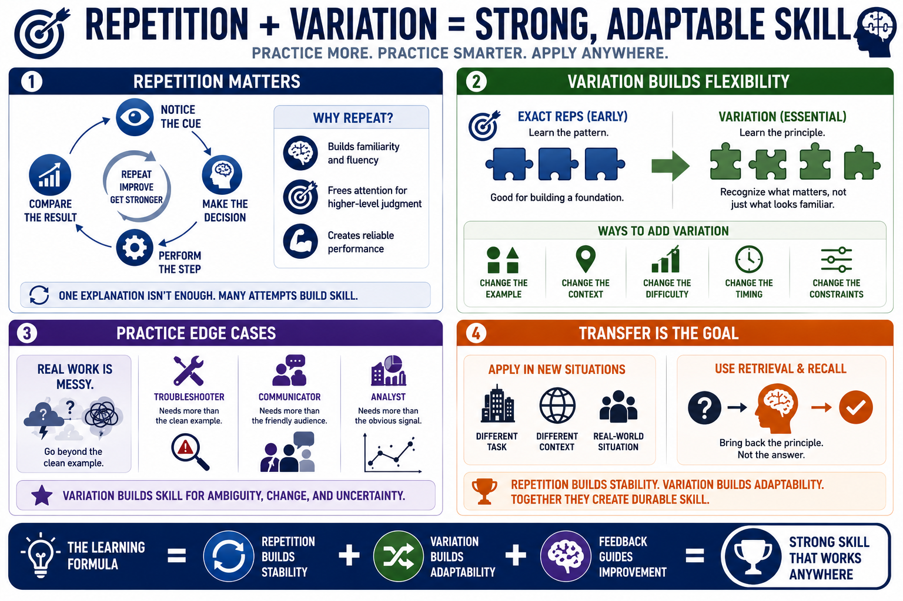

Repetition with Variation
Connecting to LMS... Progress: in progress

Narration
Repetition matters because skill improves through repeated attempts, feedback, and correction. A single explanation or demonstration rarely creates reliable performance. Repetition gives the learner multiple chances to notice the cue, make the decision, perform the step, and compare the result. It also helps parts of the skill become more fluent so attention can move to higher-level judgment.
Exact repetition is useful early, but it is not always enough. If every practice attempt looks the same, the learner may memorize the surface pattern without understanding the underlying principle. Variation helps the skill become more flexible. Change the example, the context, the difficulty, the timing, or the constraints so the learner has to recognize what matters rather than copy a fixed script.
Practicing edge cases is especially useful when real work includes ambiguity. A strong troubleshooter needs more than the clean example. A strong communicator needs more than the friendly audience. A strong analyst needs more than the obvious signal. Variation teaches the learner how the skill behaves when conditions shift, evidence is incomplete, or the usual shortcut no longer works.
Transfer is the goal. The learner should be able to apply the skill in a different task, context, or real-world situation. Retrieval and recall can support that transfer by asking learners to bring back the principle without the answer sitting in front of them. Repetition builds stability. Variation builds adaptability. Together they reduce brittle skill that only works in one familiar scenario.